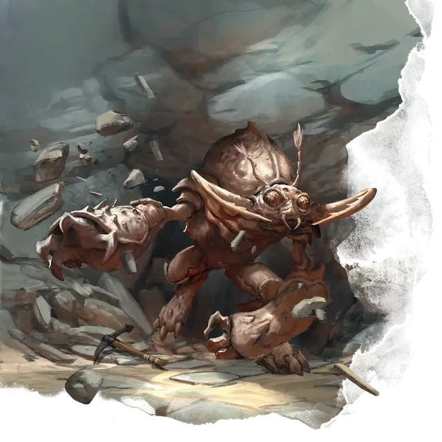

Бурый увалень
Umber Hulk
Большое Чудовище, Хаотичное Злое

Класс Защиты 18 Инициатива +4 (14)
Хиты 93 (11к10 + 33)
Скорость 30 футов, Копания 20 футов
| мод | спас | ||
|---|---|---|---|
| СИЛ | 20 | +5 | +5 |
| ЛОВ | 13 | +1 | +1 |
| ТЕЛ | 16 | +3 | +3 |
| мод | спас | ||
|---|---|---|---|
| ИНТ | 9 | −1 | −1 |
| МДР | 10 | +0 | +0 |
| ХАР | 10 | +0 | +0 |
Чувства пассивное Восприятие 10, Чувство вибрации 60 футов
Языки Язык Бурых увальней
Опасность 5 (1 800 опыта; БВ +3)
Особенности
Прокладывание тоннеля. Бурый увалень может перемещаться сквозь сплошной камень со Скоростью копания, уменьшенной вдвое, оставляя за собой тоннель диаметром 10 футов.
Действия
Мультиатака. Бурый увалень совершает три атаки Раздиранием.
Раздирание. Бросок рукопашной атаки: +8, досягаемость 10 фт. Попадание: 12 (2к6 + 5) Рубящего урона.
Бонусные действия
Дурманящий взгляд (Перезарядка 5–6). Спасбросок Мудрости: Сл 14, каждое существо в 30-футовом Конусе. Провал: Цель не может совершать Реакции до начала следующего хода бурого увальня и бросает 1к8, чтобы определить, что оно будет делать в этот ход:
1–4. Цель ничего не делает.
5–6. Цель не совершает Действие и Бонусное действие и тратит всю свою Скорость на перемещение в случайном направлении.
7–8. Цель совершает одну рукопашную атаку по случайно выбранному существу в пределах зоны досягаемости или не делает ничего, если не может совершить такую атаку.
Бонус мастерства +3
Среда обитания Подземье
Сокровища Отсутствуют
Бурый увалень
Роющие твари из подземных глубин
Неуклюжие двуногие бурые увальни в бронированных панцирях роют тоннели по всему Подземью в поисках пропитания или того, что можно сокрушить своими мощными жвалами. Терпеливые охотники, они чувствуют движение через вибрацию окружающей земли, а затем прорываются сквозь стены пещеры, чтобы застать свою добычу врасплох. Если же жертва встретится с жутким взглядом фасеточных глаз, она начнёт действовать иррационально и даже может наброситься на своих союзников.
Обычно бурые увальни скрываются в тоннелях, вырытых ими параллельно другим проходам. Почувствовав движение существ, они разрушают каменные стены между тоннелями и нападают. Увальни могут поддерживать связь с другими сородичами, но предпочитают охотиться в одиночестве и избегают территорий других увальней.
Большую часть времени они проводят в поиске пищи и защите своей территории от незваных гостей. Им неинтересно вступать в союзы с другими существами, но таким вероломным жителям Подземья, как бехолдеры или свежеватели разума, порой удаётся заставить бурых увальней служить себе.